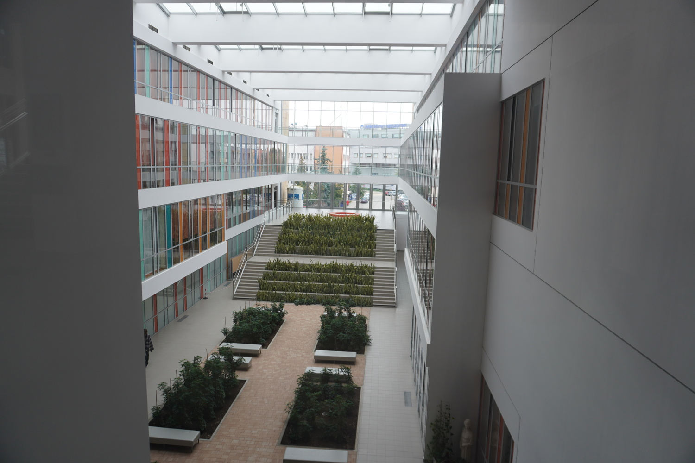
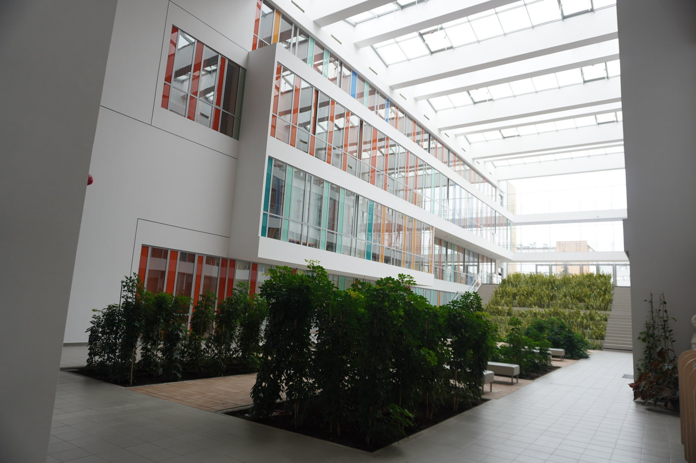
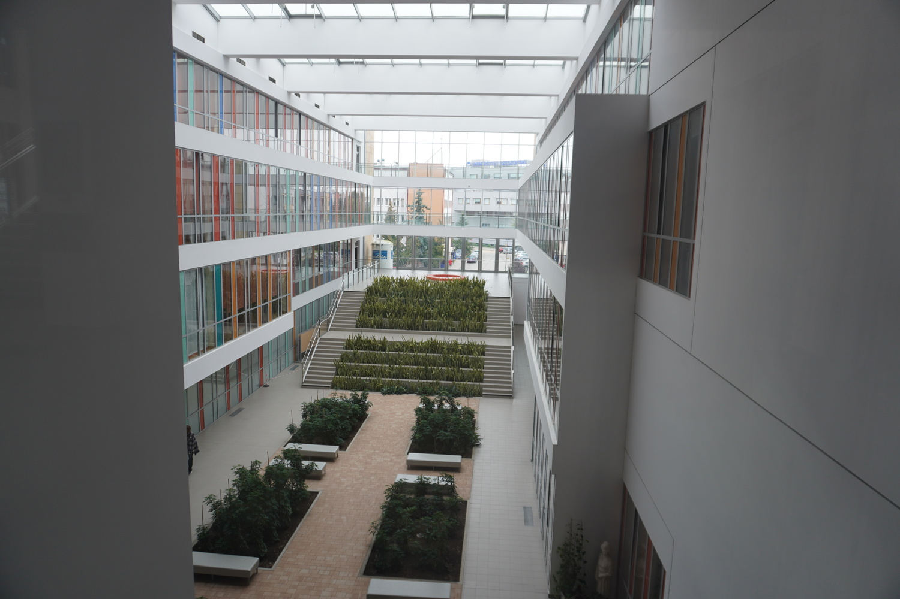
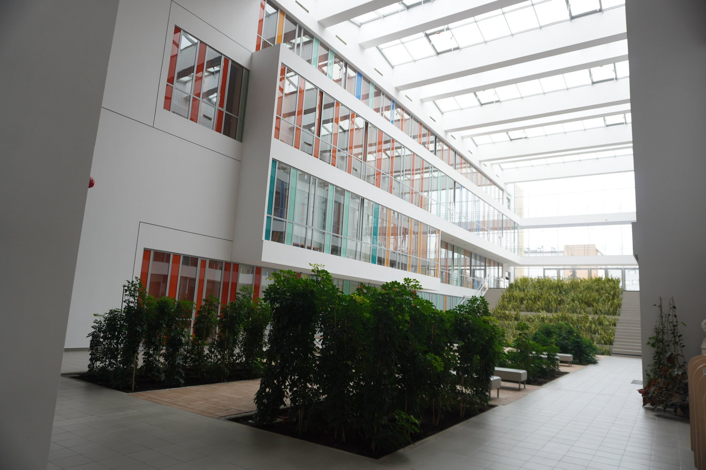

Komunikat 1
Sekcja Pedeutologii KNP PAN oraz Instytut Pedagogiki Uniwersytetu Rzeszowskiego zapraszają do udziału w II edycji Konferencji i Szkole Pedeutologicznej pt. „Nauczyciel jako współkreator przemian szkoły”, organizowanej w dniach 22-23 listopada 2024 r.
Termin: 22-23 listopada 2024 r.
Miejsce: Uniwersytet Rzeszowski, Budynek A0, ul. Pigonia 1, 35-310 Rzeszów
Rejestracja: Możliwa za pośrednictwem formularza (decyduje kolejność zgłoszeń).
Adresaci: pracownicy akademiccy, nauczyciele, pedagodzy, pedagodzy specjalni, psycholodzy, kadra zarządzająca placówkami oświatowymi.
Szczegółowe zapytania dotyczące konferencji prosimy kierować na adres elektroniczny: ksp@ur.edu.pl
Galeria zdjęć z Uniwersytetu Rzeszowskiego


 




Program Ramowy
PIĄTEK 22.11.2024 r.
- 09.00-10.00: Rejestracja Uczestników
- 10.00-10.30: Powitanie Uczestników i otwarcie Szkoły Pedeutologicznej
- 10.30 –12.00: Wystąpienia Mistrzów
- 12.00 – 12.15: Dyskusja
- 12.15-12.30: Przerwa kawowa
- 12.30-14.30: Panel dyskusyjny
- 14.30-15.30: Przerwa obiadowa
- 15.30-17.00: Warsztat I
- 17.00-18.00: Przerwa kawowa/ Zwiedzanie Wystawy Interaktywnej UR
- 18.30-23.00: Uroczysta kolacja
SOBOTA 23.11.2024 r.
- 09.00-10.30: Wystąpienia Mistrzów
- 10.30-10.45: Dyskusja
- 10.45-11.00: Przerwa kawowa
- 11.00-12.30: Warsztat II
- 12.30-12.45: Przerwa kawowa
- 12.45-14.15: Warsztat III
- 14.15-15.00: Przerwa obiadowa
- 15.00-16.30: Warsztat IV
- 16.30-17.00: Podsumowanie Konferencji i Szkoły Pedeutologicznej